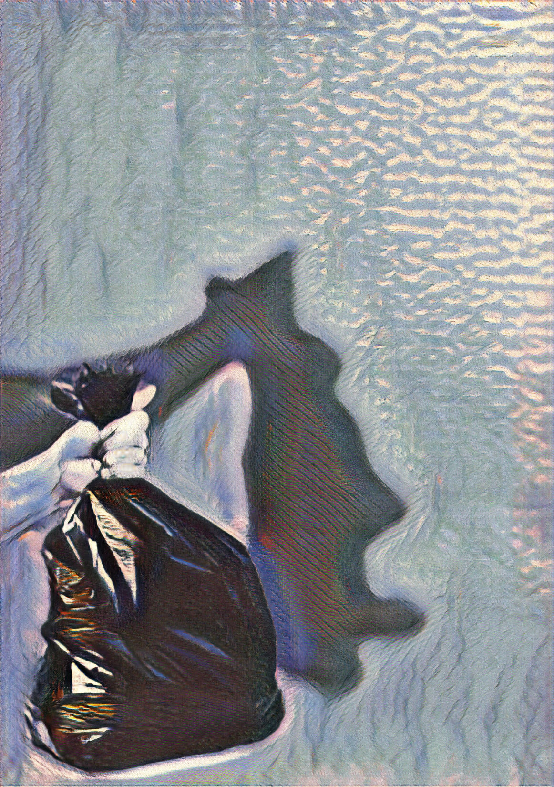
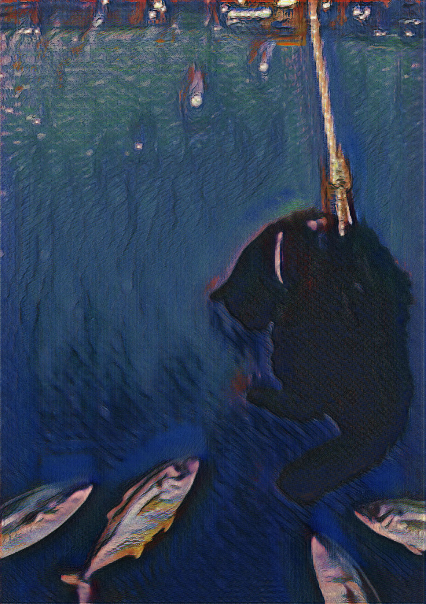
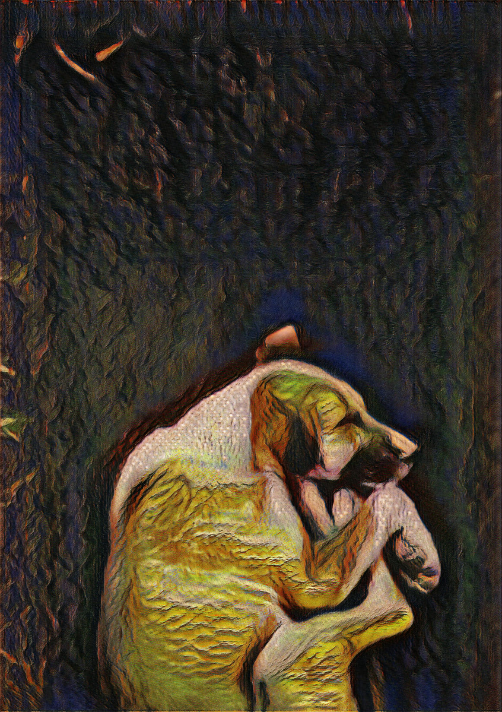
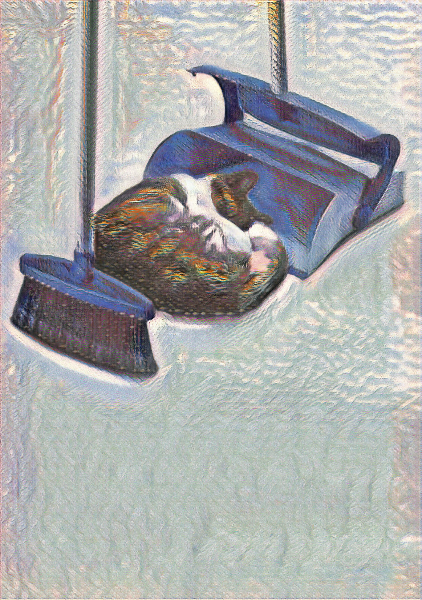

Очень важно после утраты животного, серьезно отнестись к процессу его захоронения. Чаще всего хазяева хоронят своих питомцев в коробке в земле, а то и хуже, выкидывают их, или топят.

Я НЕ МУСОР!
ВИННИ
“Вы и представить себе не можете, как тут плохо. Вокруг меня сотни чёрных пакетов наполненных мусором. И я в одном из них. Никогда не думал, что после стольких лет верной дружбы с вами мое тело заберет мусоровоз”

Я НЕ КОРМ!
СЭМ
“Мне было семь, когда я умер. Всю свою яркую и недолгую жизнь я очень любил плавать в водоемах, и гоняться за моллюсками. Несмотря на всю мою любовь к воде, я явно не хотел тлеть в ней после смерти. Теперь я стал кормом для рыб, с которыми раньше игрался.”

Я НЕ УДОБРЕНИЕ!
ЧАРЛИ
"Мне всегда нравился дом, в котором я жил, особенно его двор. Хозяева часто со мной играли, иногда даже разрешали попугать местных птичек и позакапывать косточки. Но я никогда не думал, что однажды меня закопают тут также"

Я НЕ ПЫЛЬ!
МУРЗИК
“Однажды мне было очень больно и плохо. Я искал глазами своего хозяина, который только что нес меня куда-то на руках, но теперь его не было видно. Кажется, я был где-то на улице, вокруг стало очень шумно, но меня никто не замечал. Тогда я подумал, что ничем не заслужил такую участь. Меня просто выкинули”